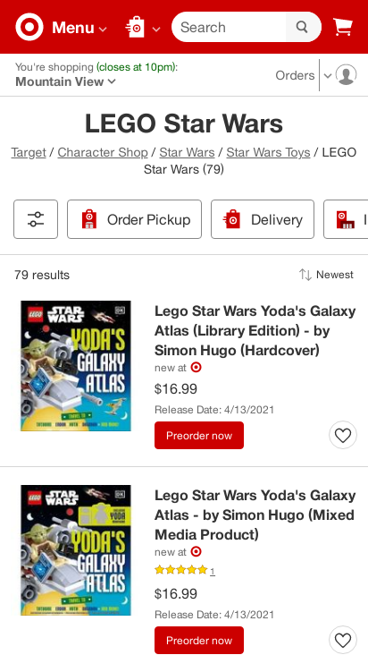
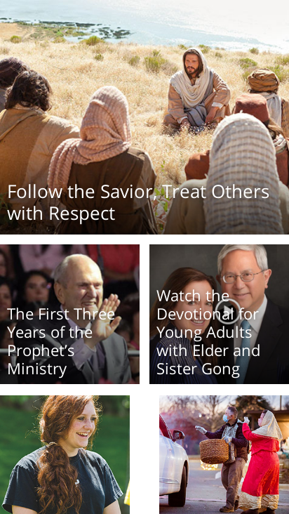
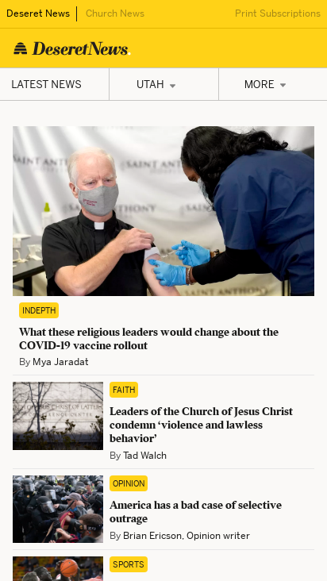

Hick's Law
Target
 Hick's Law says that each additional choice
increases the time required to take a decision.
Target uses a variety of filters for the user to choose from.
It allows for the user to have less options to choose from.
White Space and Clean Design
The Church of Jesus Christ of Latter-day Saints
White Space is used to draw attention to the content. It's also called 'negative space'. It adds to readibility of this webpage. This webpage is easy to read, and looks professional and clean. It lends crediblity to the site.
Contrast
The Deseret News
Contrast is used on this page to well. White background with black
text is the easiest to read. It also uses yellow to call attention to certain groups of news stories.